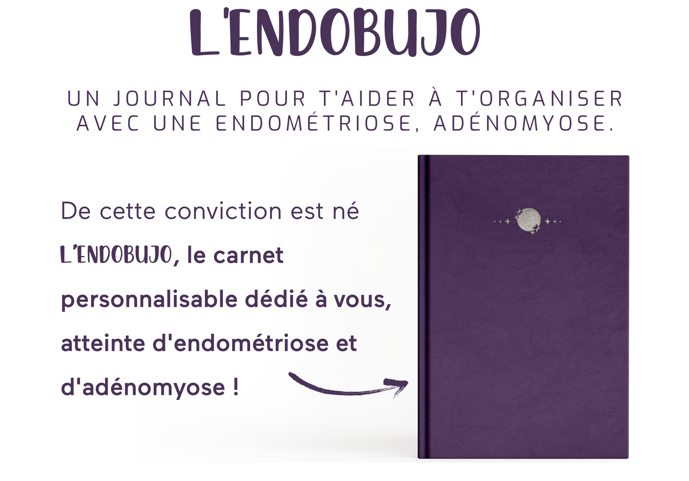
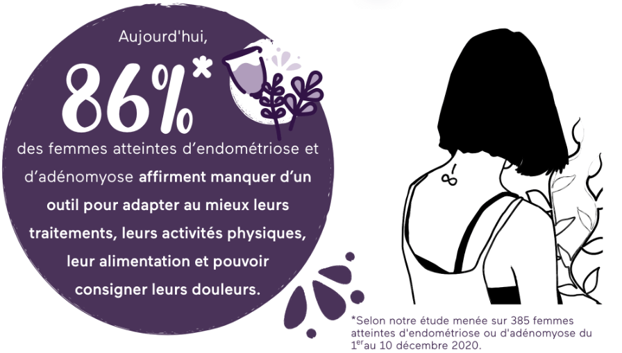

Le projet
EndoBujo est un carnet de notes permettant aux personnes atteintes d'endométriose de suivre leur maladie chronique, car entre les rendez-vous médicaux avec différents professionnels de la santé, les aliments à favoriser ou non pour éviter l’inflammation… ; il est difficile de s’y retrouver et de ne pas se laisser décourager ! L'EndoBujo est le support idéal pour accompagner les femmes avec de l'endométriose.

L'EndoBujo a été créé pour aider ces patientes à acquérir les connaissances nécessaires à une amélioration de leurs symptômes : “Le savoir est le pouvoir”.
Choix graphiques
Le thème du site a été inspiré par ma propre expérience de patiente et la biographie d’une endométriosique qui pousse les malades à réfléchir, s'informer et prendre en main leur santé. J’ai voulu m’inspirer de l’univers des sorcières, qui sont des archétypes de femmes fortes capables d’apprendre et partager leurs connaissances entre elles. Les illustrations représentent des physiques féminins différents et puissants, à l’image de ces sorcières.



La plupart des sites d’information à propos d’une maladie sont assez austères et formel. Il était important de pouvoir casser ce code avec ce site, puisqu'il donne, de part son aspect illustré, l’envie d’y passer du temps et de lire les différents articles.
Il était important de casser ceci en proposant un design autant beau qu’utile pour ces femmes malades. En faisant le choix de moins représenter la maladie, la douleur et le désespoir puisque le site est là pour donner de l'espoir et montrer que les symptômes peuvent diminuer et se gérer avec la bonne hygiène de vie et les bonnes sources d’informations.
Logotype
L’identité visuelle tourne également autour de la lune, astre rapporté régulièrement au féminin de part l’aspect changeant et EndoBujo de son apparition dans notre ciel, faisant ainsi référence au nom du site et au cycle menstruel.
Allier un univers graphique assez mystique avec un contenu pourtant très scientifique et sourcé est un choix créatif, une manière aussi de montrer que ce que l'on pourrait prendre pour de l'ésotérisme n'est finalement que de la science qu’on ne comprend pas encore.

Iconographie

Couleurs

Créer une communauté
Avec le site web, nous avons créés un support de communication pour la communauté des endogirls. Ce compte nous permet de simplifier et résumer les dernières nouvelles sur l'endométriose, nos articles ou bien de créer du lien.

+800
en 6 mois.

+600
en 1 mois.

+250
en 15 jours.
Nous avons choisis un support qui est utilisé par un public principalement féminin et qui met l'accent sur l'esthétique du contenu. La communauté d'EndoBujo s'élève à plus de 800 abonnés car elles sont plus de 600 à nous suivres sur Instagram et plus de 200 sur Facebook.